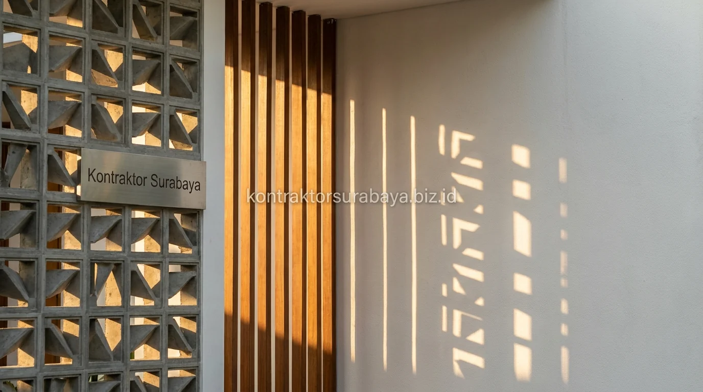

Tinggal di kawasan pesisir tropis seperti Surabaya menghadirkan tantangan suhu udara yang cenderung panas dan terik sepanjang tahun. Banyak pemilik rumah mendambakan hunian berpenampilan modern yang elegan, namun khawatir ruangan di dalamnya akan terasa seperti oven jika mengaplikasikan banyak kaca besar. Konsep arsitektur tropical modern hadir sebagai solusi sempurna: menyatukan keanggunan estetika kekinian dengan kecerdasan sistem pendinginan pasif alami.
1. Ciri Khas Fasad Tropis Modern yang Estetik
Garis fasad yang bersih, atap kombinasi miring dan datar, material natural seperti kayu dan batu, serta jendela lebar dengan shading adalah empat ciri utama fasad tropis modern.
- Garis Fasad Bersih: Menampilkan bidang-bidang tegas geometris tanpa ornamen berlebih yang memberi kesan modern, rapi, dan menenangkan.
- Kombinasi Atap Miring & Datar: Kemiringan atap yang presisi mempercepat drainase air hujan lebat tropis sekaligus memberi karakter arsitektur dinamis.
- Material Alami Bertekstur: Penggunaan aksen kayu conwood, batu alam andesit, atau bata terakota menonjolkan kehangatan karakter tropis alami.
- Bukaan Kaca Berpelindung: Jendela lebar yang dilengkapi elemen peneduh (shading) memaksimalkan pasokan cahaya alami tanpa membawa radiasi panas terik.
2. Elemen Shading untuk Mengurangi Panas Tanpa Mengorbankan Estetika
Kanopi, secondary skin, tritisan lebar, dan vegetasi rambat adalah empat elemen shading yang paling sering diterapkan untuk menjaga fasad tetap estetik sekaligus sejuk.
- Kanopi & Overhang: Ditempatkan di atas bukaan pintu dan jendela kaca untuk menepis sinar matahari langsung saat posisi matahari tinggi.
- Secondary Skin: Panel kisi-kisi atau roster beton yang dipasang di depan dinding luar mampu menyaring hingga 60% radiasi panas matahari tanpa menghalangi hembusan angin sejuk.
- Tritisan Atap Lebar: Teritisan atap yang menjulur keluar memberi bayangan peneduh pada dinding lantai atas sehingga tidak cepat menyerap panas.
- Vegetasi Rambat: Tanaman rambat vertikal pada kawat sling baja menambah kesegaran visual fasad sekaligus menjadi insulator termal organik.

3. Bagaimana Orientasi Bangunan Memengaruhi Kenyamanan Termal?
Bangunan yang menghadap barat menerima paparan panas sore paling tinggi, sehingga sisi ini memerlukan perlindungan shading lebih banyak dibanding sisi lainnya.
Analisis arah orientasi matahari dilakukan sejak tahap awal perencanaan denah bersama tim arsitek. Sisi barat dan timur yang terpapar radiasi langsung dirancang dengan bukaan jendela lebih terarah atau dilapisi secondary skin, sementara sisi utara dan selatan dimanfaatkan secara optimal untuk bukaan jendela kaca besar guna memasukkan cahaya alami yang lembut dan teduh.
"Arsitektur tropis modern yang berhasil adalah karya yang mampu berdialog dengan iklim setempat: tampil memukau dari luar dan senantiasa adem serta nyaman saat ditinggali di dalam."
4. Material Atap dan Dinding yang Mendukung Sirkulasi Udara
Roof vent, dinding double skin, roster, dan plafon tinggi adalah empat material dan elemen struktur yang membantu sirkulasi udara tetap optimal pada rumah tropis modern.
- Roof Vent di Puncak Atap: Menjadi jalur pelepasan udara panas (thermal stack effect) yang terperangkap di bawah rangka atap.
- Dinding Berongga (Double Skin): Menciptakan lapisan bantalan udara yang menghambat perpindahan suhu panas eksterior ke ruang tidur.
- Dinding Roster: Memungkinkan pertukaran angin silang 24 jam secara alami di area tangga, balkon, maupun ruang servis.
- Plafon Tinggi (High Ceiling): Menjaga volume udara ruang tetap lega sehingga suhu pada level aktivitas penghuni tetap terasa sejuk.
5. Peran Elemen Hijau dalam Menurunkan Suhu Rumah Tropis
Tanaman peneduh dan taman kecil di sekitar bangunan membantu menurunkan suhu udara di sekitar rumah sebelum udara tersebut masuk ke dalam ruangan.
Penempatan pohon peneduh seperti Tabebuya atau Ketapang Kencana mini pada sudut kavling barat, dipadukan dengan taman kering di teras dan inner courtyard, menciptakan iklim mikro (microclimate) yang secara signifikan meredam pantulan panas aspal jalan sebelum hawa udara menerobos ke dalam hunian.
6. Kesalahan Umum yang Membuat Rumah Tropis Modern Tetap Panas
Jendela besar tanpa shading, atap tanpa ventilasi, dinding tanpa insulasi, dan minimnya elemen hijau adalah empat kesalahan yang paling sering membuat rumah tropis modern tetap terasa panas.
- Kaca Lebar Tanpa Peneduh: Menyebabkan radiasi inframerah terperangkap di dalam ruangan seperti efek rumah kaca.
- Ruang Atap Kedap Udara: Menjebak panas berlebih di atas plafon yang kemudian memancar ke bawah hingga malam hari.
- Dinding Barat Tanpa Pelindung: Membuat dinding kamar tidur di lantai 2 tetap terasa hangat dan gerah saat hendak beristirahat.
- Halaman Serba Beton Cor: Menghilangkan area resapan dan memantulkan panas terik matahari langsung ke fasad rumah.
Setiap kavling memiliki orientasi dan kondisi lingkungan yang berbeda, sehingga kombinasi elemen desain tropis modern perlu disesuaikan melalui konsultasi langsung dengan arsitek. Lihat referensi visual lebih lengkap pada galeri proyek kami, atau pelajari cakupan layanan pada halaman jasa arsitek Surabaya.